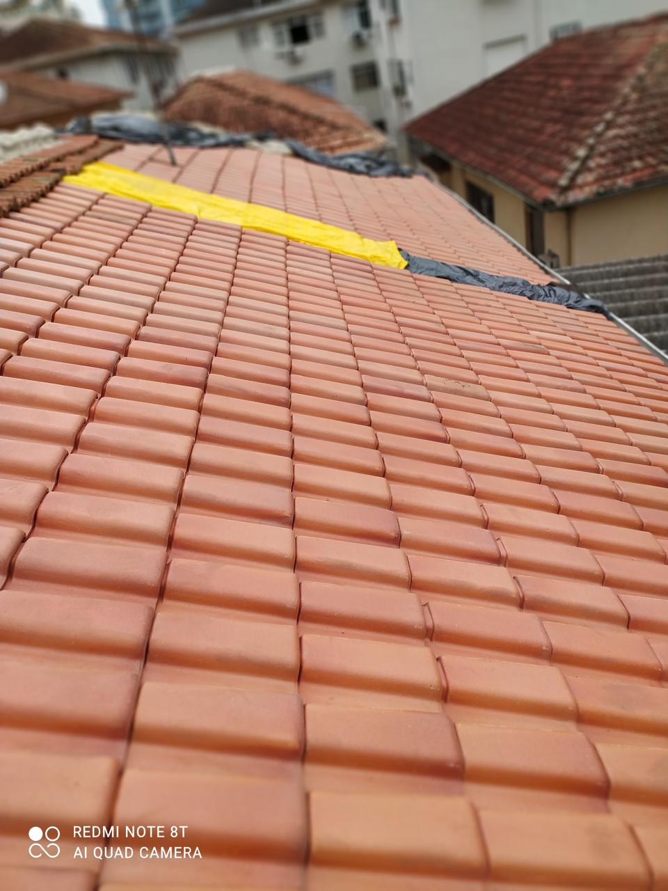
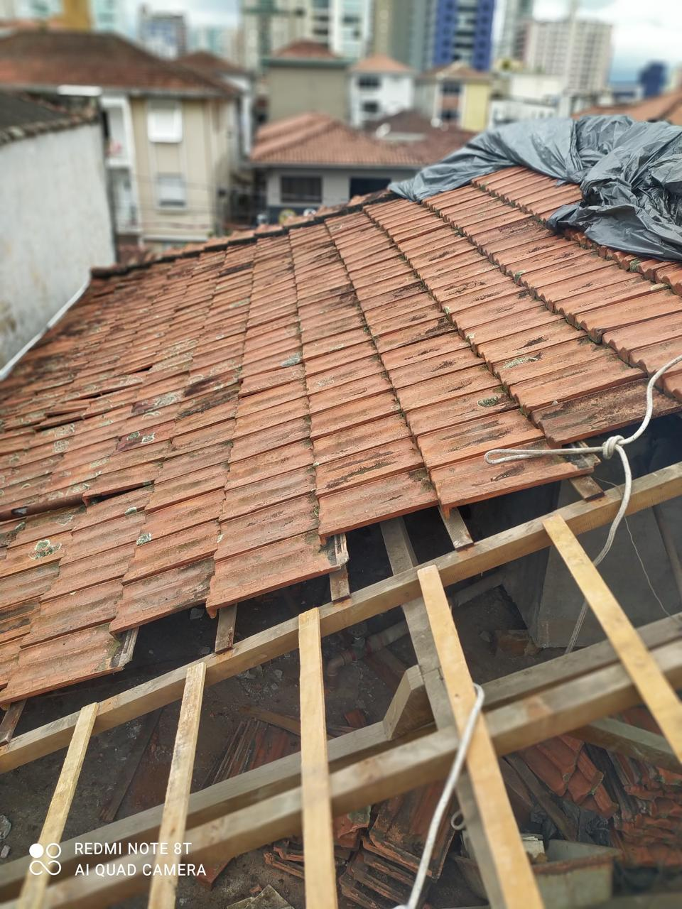
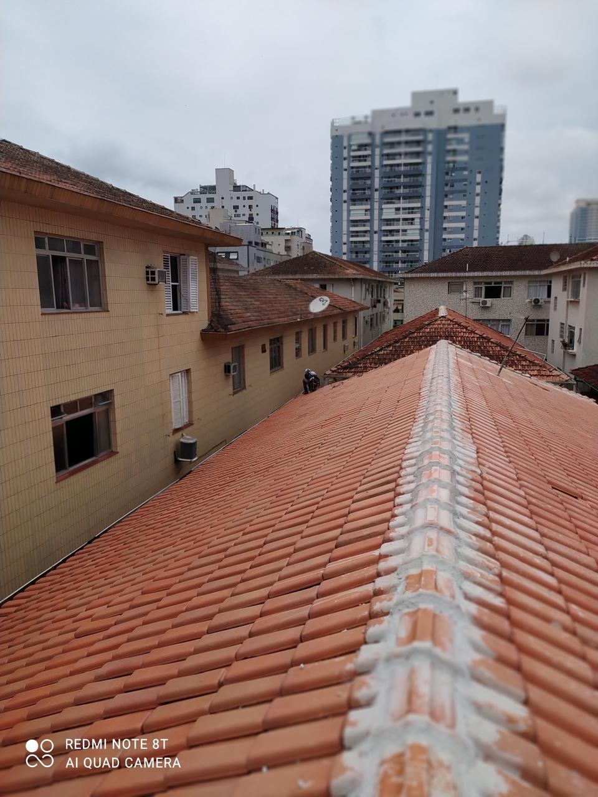

Reformas em geral
Reforma de ambientes residenciais, comerciais e áreas comuns de condomínios.
Saiba mais sobre reformas →Reformas residenciais, comerciais e prediais em Santos e região, com serviços de pintura, impermeabilização, pisos, alvenaria e manutenção executados por profissional experiente.

TRABALHO REAL
Reformas, manutenção e serviços gerais executados com atenção aos detalhes.
Atendimento em Santos e região para pequenos reparos, reformas completas e manutenção de imóveis.
Reforma de ambientes residenciais, comerciais e áreas comuns de condomínios.
Saiba mais sobre reformas →Pintura interna e externa, preparação de superfícies, massa corrida e acabamento.
Saiba mais sobre pintura →Troca e instalação de pisos, revestimentos, rejuntes e correções de acabamento.
Tratamento de infiltrações, paredes, calhas, telhados e áreas expostas à umidade.
Saiba mais sobre impermeabilização →Construção e reparo de paredes, muros, reboco, correções e acabamentos.
Serviços de conservação, reparos e melhorias em condomínios e imóveis comerciais.
Saiba mais sobre manutenção predial →Conheça também nossos serviços de reforma de condomínios em Santos →
A Technos Construção atua há mais de 10 anos com obras e reformas em Santos e região, oferecendo atendimento próximo e foco em soluções adequadas para cada imóvel.
Antes de iniciar, avaliamos o serviço, explicamos o que será feito e preparamos um orçamento com escopo, prazo e condições combinadas com o cliente.
Quero conversar sobre minha obra →Fotos reais de serviços de reforma, manutenção e cobertura.
Serviço de cobertura com organização das telhas e acabamento da área trabalhada.

Registro real durante o trabalho de manutenção do telhado.

Remoção controlada de telhas para acesso à estrutura e execução do serviço necessário.

Vista geral da cobertura após a etapa de manutenção e recomposição.

Serviços de revestimento, piso e acabamento em ambiente residencial.
Conte o que precisa e envie fotos ou vídeos do local.
Analisamos a necessidade e, quando necessário, combinamos uma visita.
Você recebe o orçamento com descrição do serviço, prazo e condições.
Após a aprovação, organizamos o início e seguimos o escopo combinado.
Preencha os dados ao lado. Ao enviar, o site prepara uma mensagem pronta para abrir no WhatsApp da empresa.
Sim. Atendemos condomínios com serviços em áreas comuns, pintura, manutenção e reformas.
Sim. Fotos e vídeos ajudam a entender melhor o serviço antes de uma possível visita.
Sim. A proposta pode incluir memorial descritivo, prazo, valor, materiais e forma de pagamento combinada.